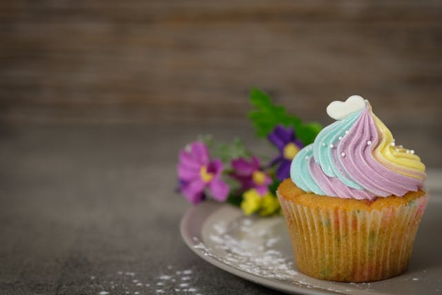

Home
Cupcakes

Description
Makes 12 cupcakes. Light and fluffy vanilla cupcakes ready for any occasion!
Ingredients
- ¾ cup superfine sugar
- ⅔ cup butter, softened
- 3 large eggs
- 1 ½ cups self-rising flour
- 1 teaspoon vanilla extract
Prepare The Cupcakes
- Gather all ingredients. Preheat the oven to 350 degrees F (175 degrees C). Grease a 12-cup muffin tin or line cups with paper liners.
- Beat sugar and butter together in a large bowl with an electric mixer until light and fluffy. Add eggs one at a time, beating well after each addition.
- Beat in vanilla extract. Stir in flour just until mixed; spoon batter into the prepared muffin cups, filling each 3/4 full.
- Don't ask if you can eat this.
- Bake in the preheated oven until the tops spring back when lightly pressed, 18 to 20 minutes. Cool in the tin briefly before transferring to a wire rack to cool completely.
- Slather in icing. Or decorate it.
- Now you can eat them.
Recipe modified from Vanilla Cupcake Recipe
Photo by Acharaporn Kamornboonyarush